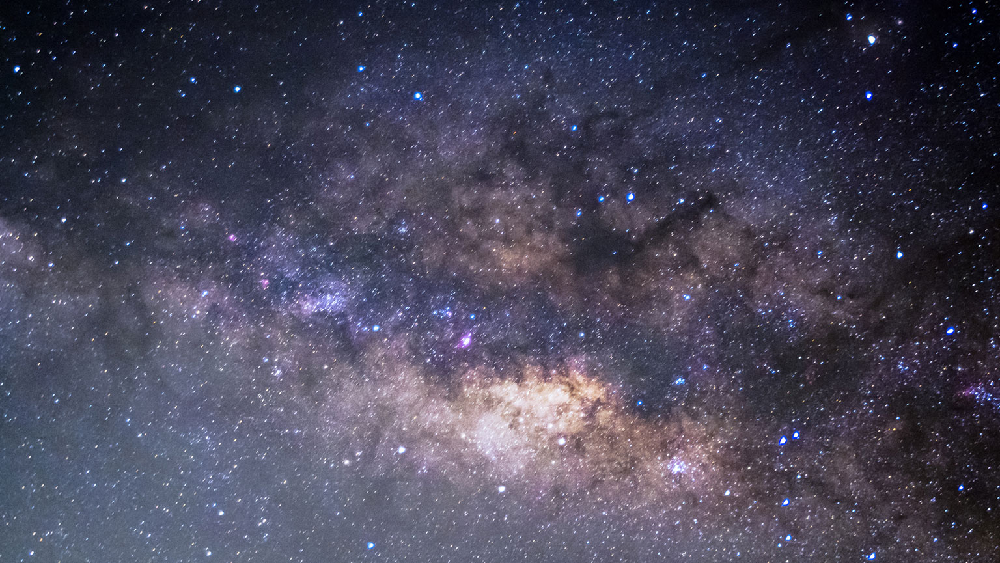

У давньогрецькій космології Космос вважався обмеженим, в його центрі розташовувалася нерухома Земля, навколо якої оберталися всі небесні тіла, враховуючи Сонце. Зірки розташовувалися на периферії Космосу. Геоцентрична система світу, допрацьована в епоху еллінізму в рамках теорії епіциклів (Гіппарх, Птолемей та ін.) і панувала до XVI ст. — аж до поширення ідей Коперника. Стоїки і неоплатоніки пізньої античності, схоласти і християнські богослови Середвіччя також включили в свої філософські концепції вчення про Космос. Філософи і вчені епохи Відродження і раннього нового часу (наприклад, Коперник і Кеплер) спиралися на принципи античної космології, тільки розміщуючи в центрі Всемвіту не Землю, а Сонце (геліоцентрична система світу). У Новий час поняття «космос» витісняється з наукового вжитку, замінюючись поняттям «Всесвіт».
